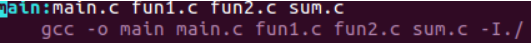
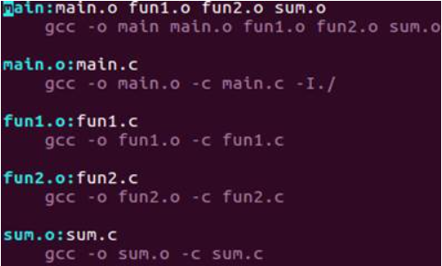
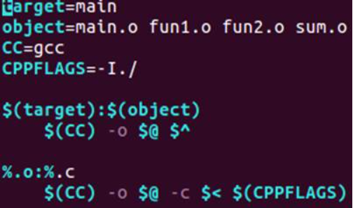
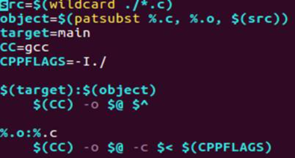
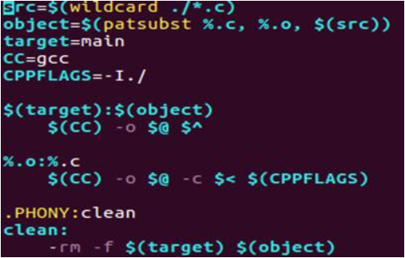

makefile-gdb 文件
可以在文件中指定那些文件可以先进行编译，那些文件可以后进行编译，那些文件可以重新编译。他可以自动化编译程序。。。。
6-1 makefile 基本规则
如下：
目标：依赖
(tab) 命令
规则三要素：
目标：要生成的目标文件。
依赖：目标文件由那些文件生成。
命令：执行命令以便生成目标。
例子: makefile 的第一种写法：

这样写的效率最低，修改一个文件时，所有文件都会重新编译。
6-2 makefile 的工作原理
如果想要生成目标，则检查规则中的依赖是否都存在，如果不存在向下寻找，看看有没有生成该依赖文件 的规则，如果有则先生成该依赖，然后再回到刚才的地方生成目标。如果没有则报错
如果想要生成目标的依赖都存在，则检查规则中的目标是否要更新，而且要先检查该目标的依赖是否有更 新，如果有则必须更新该目标。也就是依赖比目标新 更新目标文件
例子：makefile 的第二种写法：

上图中，如果要生成可执行文件 main 则需要满足四个依赖，很显然在第一行四个依赖都不满足，于是向 下寻找缺少的依赖是否也需要被生成。然后就发现 main 的依赖之一 main.o 需要又一个依赖 main.c 来生成。 然后生成 main.o 文件。以此类推。上图代码过于冗余，不建议怎么写。
6-3 makefile 中的变量
makefile 中有三种变量：普通变量，自带变量，自动变量。
普通变量：
定义变量时使用 “=”
使用变量时应该这样：$(变量名)
例子：
acr = test.txt// 定义变量 acr 并且为其赋值
bar = $(test.txt) // 定义变量 baar，并且使用之前的 acr 变量为其赋值
makefile 中有一些固定的变量可以让用户直接使用，我们可以为其赋值。
CC = gcc #arm-linux-gcc
CPPFLGS : //C 预处理的选项 -I (大写 i)
CFLGS: //C 预编译的选项 -Wall -g -c
LDFLAGS: // 链接器选项 -L -l
自动变量：（只能在规则的命令中使用）
$@: 表示规则中的目标
$<: 表示规则中的第一个条件
$^: 表示规则中的所有条件，组成一个列表，以空格分隔开，如果列表中有相同项这会消除相同项。
模式规则：
至少在规则的目标定义中要包含’%’, ‘%’表示一个或多个，在依赖条件中同样可以使用’%’, 依赖条件中的’%’的 取值取决于其目标:
比如: main.o:main.c fun1.o: fun1.c fun2.o:fun2.c, 说的简单点就是: xxx.o:xxx.c
例子：markfile 文件的第三种写法：

上图 markfile 文件解析：
1. 定义一个变量 target 并且为其赋值为 main（main 是可执行程序的名字）
定义一个变量 object 并且为其赋值。（赋值内容为 main 的依赖条件）
使用自带的 CC 变量，并且为其赋值。
使用自带的 CPPFLAGS 变量，并且为其赋值。（这个变量是 预处理 - I 的那个参数）
2.(object) 这里是使用变量。
上述内容展开后如下：main:main.o fun1.o fun2.o sum.o
3.$(CC) -o $@ @表示当前规则中的目标，也就是 object 变量的值，$^ 表示要逐个取用规则中的目标，如果有重复则消除重复。
上述内容展开后如下：gcc -o main.o fun1.o fun2.o sum.o
4.%.o:%.c 这里表示生成一个或多个.o 目标文件需要一个或多个 %.c 依赖
5.$(CC) -o $@ -c %< $(CPPFLAGS) 这个不多说，我们直接展开
上述内容展开后如下：gcc -o main.o fun1.o fun2.o sum.o -c main.c fun1.c fun2.c sum.c
6-4 makefile 函数
以下是常见函数：
1.wildcard 查找指定目标下的指定类型的文件，例如：scr=$(wildcard *.c) 可以将当前目录下所以后缀为.c 的文件赋值给 src。
2.patsubst 匹配替换，例如：obj=(src)) 把变量 src 中所有后缀为.c 的文件替换成.o。
通过以上代码，发现这里的函数也会有返回值。
例子：markfile 的第四种写法：

上图的 makefile 文件的解析：
现在假设当前目录想有源文件 one.c 和 two.c
1.src=$(wildcard ./*.c) 这里使用 wildcard 来搜索当前目录下的所有后缀为.c 的文件，并且将其赋值给 src。此时 src 等于 oen.c two.c
2.object=(src)) 这里通过 patsubst；来将变量 src 中所有.c 替换为.o，替换完成后变 量 src 的值为 one.o two.o
3. 定义一个普通变量 target，并且为其赋值为 main
4. 使用自带的 CC 变量 CPPFLAGS 变量，并且为其赋值
5.(object) 这个不多说了，展开后：main:oen.o two.o
6.$(CC) -o $@ $^ 这个也不多说了，展开后：gcc -o main -c oen.o two.o
7.%.o:%.c 不多说，展开为：one.o:one.c 和 two.o:two.c
8.$(CC) -o $@ -c $< $(CPPFLAGS) 不多说
展开后为：gcc -o one.o -c one.c 和 gcc -o two.o -c two.c
6-5 makefile 的清理操作
我们在编译刚才中，会将.c 文件生成为.o 文件，然后再通过.o 生成 out 可执行文件，当一切操作完成之后 我们就可以使用我们的 out 可执行文件了，但是刚才生成的.o 文件还在我们的磁盘是，此时这些东西已经没有 用了，所以我们可以通过某些方法来清除编译中间生成的.o 文件。
我们在 makefile 文件中使用一个特殊的规定来定义清理操作，通常命名为 clean，我们让这个规则用于删 除编译过程中的.o 文件。
clean 命令中的特殊符号：
“-” 此条命令出错，make 也会继续执行后续的命令。
rm -f 强制执行，比如要删除的文件如果不存在，使用 - f 则不会报错。
@ 不显示命令本身，只显示命令结果。可以让输出的东西看着更加整洁。
伪目标声明：
PHONY:clean
当声明目标为伪目标后，makefile 将不会检查目标是否存在或者该目标是否需要更新。
声明为伪目标后，他不会管目标是不是文件什么的，只需执行 mark clean 即可执行目标 clean 下的命 令。
其他：
如果只执行 make 指令，不带任何参数的话，会默认执行第一个目标。
执行 make 指定的目标 即可执行指定的目标。
例子：makefile 文件的第五种写法：

上图 makefile 文件的解析：
假设现在有两个源文件 one.c 和 two.c
1. 通过 wildcard 函数搜寻当前目录下所有以.c 结尾的文件，赋值给变量 src
2. 通过 patsubst 函数将 src 中所有的.c 替换为.o
3. 定义变量 target 并且赋值为 main
4. 使用自带变量 CC 并且赋值为 gcc
5. 使用自带变量 CPPFLAGS 并且赋值。
8.(object) 使用变量，展开后为 main:one.o two.o
9.$(CC) -o $@ $^ 使用变量，展开后为 gcc -o main oen.o two.o
10.%.o:%.c 使用自动变量，% 代表一个或多个目标或依赖。
展开为:one.o:one.c 和 two.o:two.c
11.$(CC) -o $@ -c %< $(CPPFLAGS) 不多说了，
展开为：gcc -o one.o -c one.c 和 gcc -o two.o -c two.c
12. .PHONY:clean 声明伪目标 clean 这样就可以直接执行 make clean 了
13.clean 声明目标 clean，并且这个目标没有依赖
14.-rm -f $(target) $(object) 这里指目标 clean 有指令可以强制删除可执行程序和.o 文件。
展开为：rm -f main one.o two.o